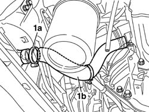
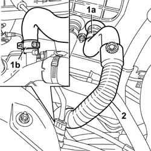
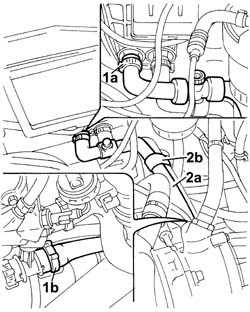
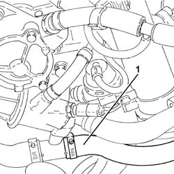
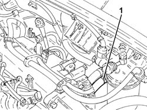

5010A16 HEATER WATER RETURN PIPE - R.R.
- Path
- Procedures > 50 AUXILIARY UNITS > 5010 CLIMATE CONTROL - MISCELLANEOUS > 5010A HEATER WATER PIPES > 5010A16 HEATER WATER RETURN PIPE - R.R.
- Kind
- repair procedure (removal / refitting; the operation number is the code)
- Applies to
- engines: 1.2 8v, 1.4 8v, 1.6 16v, 1.9 JTD 8V, 1.9 DIESEL; all production periods
- Interactive page
- https://sloeber94.github.io/elrnDB-fDbl/en/#/2584792
Applies to: engines: 1.2 8v; all production periods
Applies to: engines: 1.4 8v, 1.6 16v; all production periods
Position the vehicle on a lift.
Disconnect the negative battery terminal.
Description | Connector | |
|---|---|---|
- | Battery |
Op. 1048A32 HOSE FROM AIR FILTER TO INTAKE MANIFOLD - R + R
Op. 7055B54 UNDER ENGINE PROTECTION/GUARD - R.R.
1. Arrange a suitable container beneath the vehicle to recover the engine coolant; then open collar (1a) and disconnect lower radiator pipe (1b).

Applies to: engines: 1.4 8v, 1.6 16v; all production periods
1. Open the band (1a) on the heaater and the band (1b) on the rigid pipe.
2. Disconnect the pipe and remove it from the engine compartment.

Applies to: engines: 1.4 8v, 1.6 16v; all production periods
Check the condition of the pipe, then place it in the vehicle.
Connect the water return pipe to the rigid pipe and secure it using the retaining band.
Connect the heater water return pipe and secure it using the band.
Connect the lower pipe to the radiator using the band.
Op. 1048A32 HOSE FROM AIR FILTER TO INTAKE MANIFOLD - R + R
Op. 0010T20 ENGINE COOLANT - CHANGE
Op. 7055B54 UNDER ENGINE PROTECTION/GUARD - R.R.
Connect the negative battery terminal.
Description | Connector | |
|---|---|---|
- | Battery |
Remove the vehicle from the lift.
Applies to: engines: 1.9 DIESEL; all production periods
Position the vehicle on a lift.
Op. 5530B52 BATTERY SUPPORT/DRIP TRAY - R.R
Op. 7055B54 UNDER ENGINE PROTECTION/GUARD - R.R.
Position a suitable container for collecting the coolant.
Disconnect the lower radiator pipe, radiator side and then completely drain the coolant.
1. Remove the heater side (1a) and connector side (1b) retaining bands.
2. Disconnect the pipe (2a) and remove it, releasing it from the retaining band (2b).

Applies to: engines: 1.9 DIESEL; all production periods
Position the pipe and secure it using the retaining band.
Connect the pipe to the heater and to the connector and secure it using the new retaining bands.
Op. 7055B54 UNDER ENGINE PROTECTION/GUARD - R.R.
Op. 1088A30 ENGINE COOLING SYSTEM - DRAIN AND REFILL CIRCUIT WITH BLEED AIR
Op. 5530B52 BATTERY SUPPORT/DRIP TRAY - R.R
Remove the vehicle from the lift.
Applies to: engines: 1.9 JTD 8V; all production periods
Proceed with the removal
Proceed with the removal
Op. 5530B52 BATTERY SUPPORT/DRIP TRAY - R.R.
1. Loosen the band and disconnect the water return pipe from the heater, thermostat side.

Applies to: engines: 1.9 JTD 8V; all production periods
1. Loosen the band and disconnect the water return pipe from the heater, heater side and remove it.

Applies to: engines: 1.9 JTD 8V; all production periods
Place the water return pipe from the heater in position, connect it and tighten the bands.
Proceed with the refitting
Op. 5530B52 BATTERY SUPPORT/DRIP TRAY - R.R.
Proceed with the refitting
Refill the engine cooling system
Topics linked from this page (8)
- 0010T20 coolant change
- 1048A32 sleeve from air cleaner to intake manifold - r + r
- 1088A30 ENGINE COOLING SYSTEM - draining and refilling circuit and bleeding air
- 1088D10 lower sleeve for coolant outlet from radiator - r + r
- 5530B10 battery - r+r
- 5530B52 Battery DRIP TRAY/SUPPORT - R.R.
- 7055B54 under-engine guard - r r
- A001 BATTERY